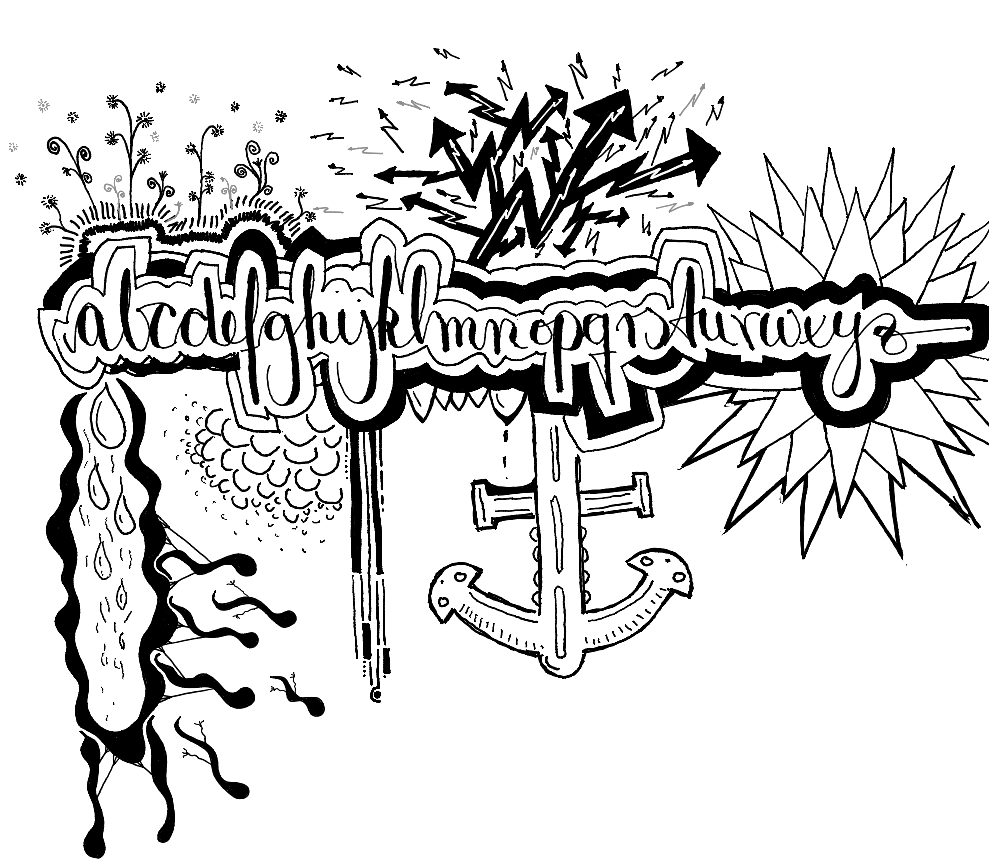

Das geheime Leben der Buchstaben
Die folgenden Worte haben sich dem Ziel verschrieben, dem geneigten Leser das geheime Leben der Buchstaben näher zu bringen. Davon kann man halten, was man will. Fakt ist: Buchstaben und ihre besonderen Fähigkeiten werden unterschätzt. Haben Sie schon einmal den Versuch gewagt, den Inhalt eines Buches, was ja schließlich Buchstaben sind, zu spüren? Richtig zu spüren? Nein, nicht was Sie jetzt denken. Schließen Sie die Augen; öffnen Sie das Buch und legen Sie ihren Kopf hinein. Oder, wenn es Ihnen besser passt, legen Sie das geöffnete Buch wie ein Dach, das sie vor der herunterprasselnden Realität schützt, auf Ihr Gesicht. Und dann warten Sie. Merken Sie etwas?
Nehmen Sie sich Zeit, denn nur so erleben Sie, was den meisten von uns entgeht, wenn sie durch eben jene jagen. Und Sie werden feststellen: Buchstaben führen ein bemerkenswertes Eigenleben, sogar ein äußerst bemerkenswertes Eigenleben. Egal ob in dicken Wälzern oder dünnen Heftchen, großen Büchern, winzigen Büchlein, in Abenteuern, Romanzen, Kurzgeschichten, Romanen, Fantasien oder romanischen Parabeln, ja sogar in Betriebsanleitungen für Flaschenöffner. Das geheime Leben der Buchstaben entfaltet sich, sobald man sich die Zeit nimmt und den Buchstaben Raum gibt.
R a u m
u n d
Z e i t
Abhängig von der Sprache, in der die Buchstaben zu Wörtern, Sätzen und Geschichten angeordnet sind, unterscheidet sich der Charakter der Buchstaben. Warum auch nicht. Was ist Ihre Muttersprache, geneigter Leser? Deutsch? Wunderbar. Das deutsche e zum Beispiel ist ein äußerst robuster Buchstabe, nicht schüchtern und vor allem dominant. Die Zampano unter den Buchstaben. Hans Dampf in alle Zeilen. Deutlich weniger präsent ist das zurückhaltende y. Ein bescheidener aber nicht weniger sympathischer Zeitgenosse. Das Schwedische und das q! Eine schwierige Geschichte, ich sage es Ihnen. Es gibt so viele Buchstaben mit so unterschiedlichen, gar exotischen Charakteren, sie würden es nicht glauben, wenn ich Ihnen davon erzähle. Kostprobe gefällig? Schauen Sie selbst (ein paar habe ich mir vielleicht selber ausgedacht):
ʍ - das umgedrehte W. Ein fantastischer Zeitgenosse, der alles auf den Kopf stellt. Oder das gestreckte ʗ - ein albeolarer Klicklaut - mit der Zunge erzeugt. Dieser Buchstabe hat sehr viel zu erzählen. Dann hätten wir das ᶑ - sind Ihnen der filigrane Schwanz und der wunderschöne Haken aufgefallen? Ein tänzelnder Begleiter, dessen Virtuosität jeden sofort in den Bann zieht. Es handelt sich dabei um einen Buchstaben aus der Sprache der Ngad’a, einer altmalaiischen Ethnie von der indonesieschen Insel Flores. Flores wie… Blume! Oder das | - erkennen Sie es? Vermutlich nicht. Dieser Buchstaben kommt aus der Sprache einer Zivilisation des Planeten TOI-178 (so die irdische Notation). Ein besonders liebenswürdiger Buchstabe, der häufig in Romanzen anzufinden ist. Jeder Buchstabe erzählt eine Geschichte.
Jeder Buchstabe ist anders. Groß, klein. Dick. Noch dicker. So richtig dick. Dünn. Oben dick, unten dünn. Manche Buchstaben passen gut zueinander, einige verstehen sich weniger gut. Einige Buchstaben haben noch nie miteinander zu tun gehabt. Nichtsdestotrotz, finden sie sich zusammen, wenn die Umstände es erfordern, oder einfach so. Denn Buchstaben sind von Natur aus neugierig. Sie lieben es, andere Wörter zu formen und in neuen Sätzen zu ganze Seiten zusammenzufügen, zu Abenteuern, Romanzen; naja, Sie wissen schon, das ganze literarische Repertoire eben, sogar Bedienungsanleitungen.
Aber Sie trennen sich auch wieder, finden erneut zueinander. Trennen. Zusammenkommen. Hin und her. Immer wieder, immer in anderen Kombinationen; unendlich vielen Kombinationen! Dieser Text hier zum Beispiel war mal Teil einer bisher noch unentdeckten Abenteuergeschichte eines gewissen Hagenrich von Franzenburg aus dem frühen 16 Jahrhundert. Und davor kam er, zumindest in Teilen, in einem Werk der großen Inka Rose vom Opus vor. Kennen Sie nicht? Macht nichts, die Buchstaben haben mir schon wieder einen Streich gespielt. Das ist natürlich ein Anagram von, ach, Sie finden es bestimmt selber heraus.
In der Regel nutzen Buchstaben den Schutz der Dunkelheit des geschlossennen Buches, um sich ungeniert zu bewegen und so den Pfad neuer Geschichten zu zeichnen. Wenn sich das Buch dann öffnet, springen sie unverzüglich wieder an die für sie vorgesehenen Stellen zurück - um den empfindlichen Leser nicht zu verunsichern. Stellen Sie sich vor, Sie schlagen an einem gemütlichen Samstag Abend eine Ausgabe von Murakamis Die Bäckereiüberfälle auf und landen mittendrin in einer in Dialogen umgeschriebenen Variante von Tolstois Krieg und Frieden. Ungeheuerlich.
Jedenfalls: Buchstaben sind lichtscheu und beim ersten Anzeichen von Helligkeit verfallen sie in eine Art Angststarre. Möchten Sie also einmal Zeuge dieses fantastischen Wechselspiels sein, müssen sie ein geschlossenes Buch entweder unglaublich schnell aufklappen oder sich in Geduld üben, wie ich oben schon schrieb. Legen Sie das geöffnete Buch auf Ihr Gesicht. Ist der Raum abgedunkelt, kann das durchaus hilfreich sein. Und dann warten Sie. Lassen Sie den Geruch des Papiers auf sich wirken. Geben Sie den Buchstaben Zeit, Vertrauen zu finden und eine andere Position einzunehmen, den Verlauf einer Geschichte zu verändern oder eine neue Erzählung zu erschöpfen.
Viel Spaß.
